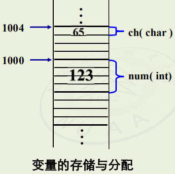

<!DOCTYPE html>
<html lang="zh">

<head>
	<meta charset="utf-8">

	<title>面向对象程序设计技术X 第二课</title>

	<meta name="mobile-web-app-capable" content="yes">
	<meta name="apple-mobile-web-app-status-bar-style" content="black-translucent">

	<meta name="viewport" content="width=device-width, initial-scale=1.0">

	<link rel="stylesheet" href="../dist/reset.css">
	<link rel="stylesheet" href="../dist/reveal.css">
	<link rel="stylesheet" href="../dist/theme/dracula.css" id="theme">
	<link rel="stylesheet" href="../css/layout.css" id="theme">

	<!-- Theme used for syntax highlighting of code -->
	<link rel="stylesheet" href="../plugin/highlight/zenburn.css">
</head>

<body>
	<div class="reveal">
		<div class="slides">
<section  data-markdown><script type="text/template"><!-- .slide: class="drop" -->
<div class="" style="position: absolute; left: 0px; top: 0px; height: 700px; width: 960px; min-height: 700px; display: flex; flex-direction: column; align-items: center; justify-content: center" absolute="true">

<style>
	.red {
	     color:red;
	}
</style>

## 第二课：指针和引用

主讲人：<span class="red">**陈笑沙**</span>
</div></script></section><section  data-markdown><script type="text/template"><!-- .slide: class="drop" -->
<div class="" style="position: absolute; left: 0px; top: 0px; height: 700px; width: 960px; min-height: 700px; display: flex; flex-direction: column; align-items: center; justify-content: center" absolute="true">

#### 本节内容 

- 2.1 指针概念
- 2.2 指针运算
- 2.3 指针与数组
- 2.4 堆内存分配
- 2.5 const 指针
- 2.6 指针与函数
- 2.7 字符串指针
- 2.8 命令行参数
- 2.9 引用的概念
- 2.10 左值与右值
- 2.11 const 引用
</div></script></section><section ><section data-markdown><script type="text/template"><!-- .slide: class="drop" data-auto-animate="true" -->
<div class="" style="position: absolute; left: 0px; top: 0px; height: 700px; width: 960px; min-height: 700px; display: flex; flex-direction: column; align-items: center; justify-content: center" absolute="true">

### 2.1 指针的概念

如何定义？

```cpp
int a = 3;
int *p;
int *pa  = &a;
```
</div></script></section><section data-markdown><script type="text/template"><!-- .slide: class="drop" data-auto-animate="true" -->
<div class="" style="position: absolute; left: 0px; top: 0px; height: 700px; width: 960px; min-height: 700px; display: flex; flex-direction: column; align-items: center; justify-content: center" absolute="true">

### 2.1 指针的概念

指针的意义

- &shy;<!-- .element: class="fragment" data-fragment-index="1" -->从数值的访问走向地址的访问(地址值的数值化)
- &shy;<!-- .element: class="fragment" data-fragment-index="2" -->从访问名字所在存储位置走向访问任何存储位置
- &shy;<!-- .element: class="fragment" data-fragment-index="3" -->获得高效数据访问的同时,也带来数据的不安全性
</div></script></section><section data-markdown><script type="text/template"><!-- .slide: class="drop" data-auto-animate="true" -->
<div class="" style="position: absolute; left: 0px; top: 0px; height: 700px; width: 960px; min-height: 700px; display: flex; flex-direction: column; align-items: center; justify-content: center" absolute="true">

### 2.1 指针的概念

指针的类型

- &shy;<!-- .element: class="fragment" data-fragment-index="1" -->定义时星号前的类型即指针类型
- &shy;<!-- .element: class="fragment" data-fragment-index="2" -->一定类型的指针指向一定类型的实体
- &shy;<!-- .element: class="fragment" data-fragment-index="3" -->指针类型是：
	- 指针操作的依据
	- 编译检查的依据
</div></script></section><section data-markdown><script type="text/template"><!-- .slide: class="drop" data-auto-animate="true" -->
<div class="" style="position: absolute; left: 0px; top: 0px; height: 700px; width: 960px; min-height: 700px; display: flex; flex-direction: column; align-items: center; justify-content: center" absolute="true">

### 2.1 指针的概念

<split even gap="2">

<div>
假设定义如下变量

```cpp
int num = 123;
char ch = 'A';
```
<!-- .element: data-id="pinter-basic" -->
</div>



</split>
</div></script></section><section data-markdown><script type="text/template"><!-- .slide: class="drop" data-auto-animate="true" -->
<div class="" style="position: absolute; left: 0px; top: 0px; height: 700px; width: 960px; min-height: 700px; display: flex; flex-direction: column; align-items: center; justify-content: center" absolute="true">

### 2.1 指针的概念

<split even gap="2">

<div>
取内存地址操作为

```cpp
int num = 123;
char ch = 'A';

char *pchar;
pchar = &ch;
```
<!-- .element: data-id="pinter-basic" -->

</div>


</split>
</div></script></section><section data-markdown><script type="text/template"><!-- .slide: class="drop" data-auto-animate="true" -->
<div class="" style="position: absolute; left: 0px; top: 0px; height: 700px; width: 960px; min-height: 700px; display: flex; flex-direction: column; align-items: center; justify-content: center" absolute="true">

### 2.1 指针的概念

`example/lec02/pointerBasic`

```cpp
#include <iostream>
int main() {
  int a = 100, b = 10;
  int *pointer_1, *pointer_2;
  
  pointer_1 = &a;
  pointer_2 = &b;
  std::cout << "a = " << a << ", b = " << b << std::endl;
  std::cout << "*pointer_1 = " << *pointer_1
            << ", *pointer_2 = " << *pointer_2  << std::endl;

  return 0;
}
```
</div></script></section><section data-markdown><script type="text/template"><!-- .slide: class="drop" data-auto-animate="true" -->
<div class="" style="position: absolute; left: 0px; top: 0px; height: 700px; width: 960px; min-height: 700px; display: flex; flex-direction: column; align-items: center; justify-content: center" absolute="true">

### 2.1 指针的概念

如何定义指针变量？

- &shy;<!-- .element: class="fragment" data-fragment-index="1" -->需要基类型
- &shy;<!-- .element: class="fragment" data-fragment-index="2" -->在定义指针变量时要注意:
  - &shy;<!-- .element: class="fragment" data-fragment-index="3" -->指针变量前面的“\*”表示该变量为指针型变量。指针变量名则不包含“\*”。
  - &shy;<!-- .element: class="fragment" data-fragment-index="4" -->在定义指针变量时必须指定基类型。
  - &shy;<!-- .element: class="fragment" data-fragment-index="5" -->指针变量中只能存放地址（指针），不要将一个整数赋给一个指针变量。
</div></script></section><section data-markdown><script type="text/template"><!-- .slide: class="drop" -->
<div class="" style="position: absolute; left: 0px; top: 0px; height: 700px; width: 960px; min-height: 700px; display: flex; flex-direction: column; align-items: center; justify-content: center" absolute="true">

### 2.1 指针的概念

思考 `*` 符号的含义：

```cpp [1|2|3]
int num = 16, *pNum = &num;
*pNum = 123;
num = 123;
```
</div></script></section></section><section ><section data-markdown><script type="text/template"><!-- .slide: class="drop" data-auto-animate="true" -->
<div class="" style="position: absolute; left: 0px; top: 0px; height: 700px; width: 960px; min-height: 700px; display: flex; flex-direction: column; align-items: center; justify-content: center" absolute="true">

### 2.2 指针运算

#### 算术运算

- &shy;<!-- .element: class="fragment" data-fragment-index="1" -->指针加减整数
- &shy;<!-- .element: class="fragment" data-fragment-index="2" -->指针递增/递减
- &shy;<!-- .element: class="fragment" data-fragment-index="3" -->指针的步长（与数据类型的关系）
</div></script></section><section data-markdown><script type="text/template"><!-- .slide: class="drop" data-auto-animate="true" -->
<div class="" style="position: absolute; left: 0px; top: 0px; height: 700px; width: 960px; min-height: 700px; display: flex; flex-direction: column; align-items: center; justify-content: center" absolute="true">

### 2.2 指针运算

#### 比较运算

- &shy;<!-- .element: class="fragment" data-fragment-index="1" -->指针的大小比较
	- `>`
	- `<`
	- `<=`
	- `>=`
- &shy;<!-- .element: class="fragment" data-fragment-index="2" -->指针相等性判断
	- `==`
	- `!=`
</div></script></section><section data-markdown><script type="text/template"><!-- .slide: class="drop" -->
<div class="" style="position: absolute; left: 0px; top: 0px; height: 700px; width: 960px; min-height: 700px; display: flex; flex-direction: column; align-items: center; justify-content: center" absolute="true">

### 2.2 指针运算

#### 指针的差值

- 计算两个指针之间的距离

```cpp
int diff = ptr2 - ptr2;
```
</div></script></section></section><section ><section data-markdown><script type="text/template"><!-- .slide: class="drop" data-auto-animate="true" -->
<div class="" style="position: absolute; left: 0px; top: 0px; height: 700px; width: 960px; min-height: 700px; display: flex; flex-direction: column; align-items: center; justify-content: center" absolute="true">

### 2.3 指针与数组

数组**大多数**情况都会退化为指针：

```cpp
int a[3] = {1, 2, 3};
int *arr = a;
int *p = &a[0];
```
<!-- .element: data-id="arr-pointer" -->
</div></script></section><section data-markdown><script type="text/template"><!-- .slide: class="drop" data-auto-animate="true" -->
<div class="" style="position: absolute; left: 0px; top: 0px; height: 700px; width: 960px; min-height: 700px; display: flex; flex-direction: column; align-items: center; justify-content: center" absolute="true">

### 2.3 指针与数组

- 可以有：`p + 1`、`p += 1` 、`p++`、`++p`等操作。
- 当然也有对应的减法操作。

`example/lec02/ptrCalc`

```cpp
int a[3] = {1, 2, 3};
int *arr = a;
int *p = &a[0];

cout << p << " " << arr << " " << *arr << endl;
arr += 1;
cout << *arr << endl;

cout << *p << " " << *p++ << endl;
cout << *++p << endl;
```
<!-- .element: data-id="arr-pointer" -->
</div></script></section><section data-markdown><script type="text/template"><!-- .slide: class="drop" data-auto-animate="true" -->
<div class="" style="position: absolute; left: 0px; top: 0px; height: 700px; width: 960px; min-height: 700px; display: flex; flex-direction: column; align-items: center; justify-content: center" absolute="true">

### 2.3 指针与数组

可以通过指针引用数组元素：

```cpp
int a[] = {1, 2, 3, 4};
int *p = a;

cout << *(p + 2) << endl;
cout << p[2] << endl;
```
</div></script></section><section data-markdown><script type="text/template"><!-- .slide: class="drop" data-auto-animate="true" -->
<div class="" style="position: absolute; left: 0px; top: 0px; height: 700px; width: 960px; min-height: 700px; display: flex; flex-direction: column; align-items: center; justify-content: center" absolute="true">

### 2.3 指针与数组

函数接收数组参数：

```cpp
void printArray(const int* arr, const size_t n)
{
	for (int i = 0; i < n; i++)
	{
		cout << arr[i];
		if (i < n - 1)
			cout << ", ";
	}
	cout << endl;
}
```
<!-- .element: data-id="compile-array" -->
</div></script></section><section data-markdown><script type="text/template"><!-- .slide: class="drop" data-auto-animate="true" -->
<div class="" style="position: absolute; left: 0px; top: 0px; height: 700px; width: 960px; min-height: 700px; display: flex; flex-direction: column; align-items: center; justify-content: center" absolute="true">

### 2.3 指针与数组

扩展内容<!-- .element: class="red" -->

多维数组： `example/lec02/multiDim`

```cpp
int a[3][4] = {1, 2, 3, 4, 5, 6, 7, 8, 9, 10, 11, 12};
// type of a: int[3][4], sometimes int(*)[4]
// type of a[0]: int[4], sometimes int*
// type of a[0][0]: int
cout << "sizeof(a): " << sizeof(a) / sizeof(int) << endl;

// int **p = a; wrong
int (*p)[4] = a;
cout << "sizeof(*p): " << sizeof(*p) / sizeof(int) << endl;

cout << "*(p + 1)[0]: " << *(p + 1)[0] << endl;
cout << "**(p + 1): " << **(p + 1) << endl;
cout << "p[2][1]: " << p[2][1] << endl;
cout << "*(*(p + 2) + 1): " << *(*(p + 2) + 1) << endl;
```
</div></script></section><section data-markdown><script type="text/template"><!-- .slide: class="drop" data-auto-animate="true" -->
<div class="" style="position: absolute; left: 0px; top: 0px; height: 700px; width: 960px; min-height: 700px; display: flex; flex-direction: column; align-items: center; justify-content: center" absolute="true">

### 2.3 指针与数组

扩展内容<!-- .element: class="red" -->

特例：对于编译期间确定大小的数组，可以用模板捕获其大小。

```cpp
template<size_t N>
void printArray(const int (&arr)[N])
{
    for (int i = 0; i < N; i++)
    {
        cout << arr[i];
        if (i < N - 1)
            cout << ", ";
    }
    cout << endl;
}
```
<!-- .element: data-id="compile-array" -->
</div></script></section><section data-markdown><script type="text/template"><!-- .slide: class="drop" data-auto-animate="true" -->
<div class="" style="position: absolute; left: 0px; top: 0px; height: 700px; width: 960px; min-height: 700px; display: flex; flex-direction: column; align-items: center; justify-content: center" absolute="true">

### 2.3 指针与数组

`C++` 版替代方案：`vector`

`example/lec02/primes`

```cpp [|2|7-11|12-14|16|17-25|27-30]
#include <iostream>
#include <vector>

using namespace std;

int main(int argc, char** argv) {
    if (argc < 2) {
        cout << "Usage: " << argv[0] << " [max number]" << endl;
        return EXIT_FAILURE;
    }
    int maxNum = atoi(argv[1]);
    if (maxNum < 2) {
        return 0;
    }

    vector<bool> primes(maxNum + 1, true);
    for (int i = 2; i < primes.size() - 1; i++)
    {
        if (!primes[i])
            continue;
        for (int j = i + 1; j < primes.size(); j++) {
            if (!primes[j])
                continue;
            if (j % i == 0)
                primes[j] = false;
        }
    }

    for (int i = 2; i < maxNum; i++)
        if (primes[i])
            cout << i << " ";
    cout << endl;

    return 0;
}
```
</div></script></section></section><section ><section data-markdown><script type="text/template"><!-- .slide: class="drop" -->
<div class="" style="position: absolute; left: 0px; top: 0px; height: 700px; width: 960px; min-height: 700px; display: flex; flex-direction: column; align-items: center; justify-content: center" absolute="true">

### 2.4 堆内存分配

#### C 语言方法

```c [7|8-9|10-11|13]
#include <stdio.h>
#include <stdlib.h>

int main()
{
    int size = 4, i;
    int *p = (int*)malloc(size * sizeof(int));
    for (i = 0; i < size; i++)
      p[i] = i + 1;
    for (i = 0; i < size; i++)
      printf("%d ", p[i]);
     
    free(p);
    return 0;
}
```
</div></script></section><section data-markdown><script type="text/template"><!-- .slide: class="drop" data-auto-animate="true" -->
<div class="" style="position: absolute; left: 0px; top: 0px; height: 700px; width: 960px; min-height: 700px; display: flex; flex-direction: column; align-items: center; justify-content: center" absolute="true">

### 2.4 堆内存分配

#### C++ 语言方法

```cpp [6|7-8|9-10|12]
#include <iostream>

int main()
{
    int size = 4;
    int *p = new int[size];
    for (int i = 0; i < size; i++)
        p[i] = i + 1;
    for (int i = 0; i < size; i++)
        std::cout << p[i] << " ";
    
    delete[] p;
    return 0;
}
```
</div></script></section><section data-markdown><script type="text/template"><!-- .slide: class="drop" data-auto-animate="true" -->
<div class="" style="position: absolute; left: 0px; top: 0px; height: 700px; width: 960px; min-height: 700px; display: flex; flex-direction: column; align-items: center; justify-content: center" absolute="true">

### 2.4 堆内存分配

`new` 与 `delete` 还有其他用法，涉及到类，之后再讲。
</div></script></section><section data-markdown><script type="text/template"><!-- .slide: class="drop" data-auto-animate="true" -->
<div class="" style="position: absolute; left: 0px; top: 0px; height: 700px; width: 960px; min-height: 700px; display: flex; flex-direction: column; align-items: center; justify-content: center" absolute="true">

### 2.4 堆内存分配

`C++` 替代方案：智能指针：

`example/lec02/pascalTrig`

```cpp [|2|12|16|21-33|36-44]
#include <iostream>
#include <memory>
#include <vector>

using namespace std;

int main(int argc, char **argv)
{
    // in this example
    // pure vector is better
    int n = 10;
    vector<unique_ptr<int[]>> pascalTrig(n);

    for (int i = 0; i < n; i++)
    {
        pascalTrig[i] = make_unique<int[]>(i + 1);
        pascalTrig[i][0] = 1;

        if (i == 0)
            continue;
        for (int j = 1; j <= i; j++)
        {
            if (j == i)
            {
                pascalTrig[i][j] = 1;
            }
            else
            {
                pascalTrig[i][j] =
                    pascalTrig[i - 1][j - 1] +
                    pascalTrig[i - 1][j];
            }
        }
    }

    for (int i = 0; i < n; i++)
    {
        for (int j = 0; j <= i; j++)
        {
            cout << pascalTrig[i][j] << "\t";
        }
        cout << "\n";
    }
    cout << endl;

    return 0;
}

```
</div></script></section></section><section ><section data-markdown><script type="text/template"><!-- .slide: class="drop" -->
<div class="" style="position: absolute; left: 0px; top: 0px; height: 700px; width: 960px; min-height: 700px; display: flex; flex-direction: column; align-items: center; justify-content: center" absolute="true">

### 2.5 const 指针

`const` 的基本作用

- &shy;<!-- .element: class="fragment" data-fragment-index="1" -->保护数据不被意外修改
- &shy;<!-- .element: class="fragment" data-fragment-index="2" -->提高代码可读性
- &shy;<!-- .element: class="fragment" data-fragment-index="3" -->编译器优化机会

```cpp
const int size = 100;  // 常量声明
```
<!-- .element: class="fragment" -->
</div></script></section><section data-markdown><script type="text/template"><!-- .slide: class="drop" data-auto-animate="true" -->
<div class="" style="position: absolute; left: 0px; top: 0px; height: 700px; width: 960px; min-height: 700px; display: flex; flex-direction: column; align-items: center; justify-content: center" absolute="true">

### 2.5 const 指针

#### 指向常量的指针（Pointer to Constant）

```cpp
const int* ptr;  // 指针可变，指向的数据不可变
int const* ptr1; // 和ptr一样

*ptr = 10; // wrong!
```

- 可以修改指针指向的地址
- 不能通过指针修改数据
</div></script></section><section data-markdown><script type="text/template"><!-- .slide: class="drop" data-auto-animate="true" -->
<div class="" style="position: absolute; left: 0px; top: 0px; height: 700px; width: 960px; min-height: 700px; display: flex; flex-direction: column; align-items: center; justify-content: center" absolute="true">

### 2.5 const 指针

#### 常量指针（Constant Pointer）

```cpp
int* const ptr = &var;  // 指针不可变，指向的数据可变
```

- 指针地址固定
- 可以通过指针修改数据
</div></script></section><section data-markdown><script type="text/template"><!-- .slide: class="drop" data-auto-animate="true" -->
<div class="" style="position: absolute; left: 0px; top: 0px; height: 700px; width: 960px; min-height: 700px; display: flex; flex-direction: column; align-items: center; justify-content: center" absolute="true">

### 2.5 const 指针

#### 指向常量的常量指针

```cpp
const int* const ptr = &var;  // 指针和数据都不可变
```
</div></script></section><section data-markdown><script type="text/template"><!-- .slide: class="drop" data-auto-animate="true" -->
<div class="" style="position: absolute; left: 0px; top: 0px; height: 700px; width: 960px; min-height: 700px; display: flex; flex-direction: column; align-items: center; justify-content: center" absolute="true">

### 2.5 const 指针

| 形式        | 指针可变性 | 数据可变性 | 声明示例                   |
| --------- | ----- | ----- | ---------------------- |
| 普通指针      | ✔️    | ✔️    | `int* ptr`             |
| 指向常量的指针   | ✔️    | ❌     | `const int* ptr`       |
| 常量指针      | ❌     | ✔️    | `int* const ptr`       |
| 双向const指针 | ❌     | ❌     | `const int* const ptr` |
</div></script></section><section data-markdown><script type="text/template"><!-- .slide: class="drop" data-auto-animate="true" -->
<div class="" style="position: absolute; left: 0px; top: 0px; height: 700px; width: 960px; min-height: 700px; display: flex; flex-direction: column; align-items: center; justify-content: center" absolute="true">

### 2.5 const 指针

```cpp
const char* str1 = "Hello";  // 正确：字符串字面量是常量
char* str2 = "World";        // 错误：C++11起禁止（需强制转换）
```
</div></script></section></section><section ><section data-markdown><script type="text/template"><!-- .slide: class="drop" -->
<div class="" style="position: absolute; left: 0px; top: 0px; height: 700px; width: 960px; min-height: 700px; display: flex; flex-direction: column; align-items: center; justify-content: center" absolute="true">

### 2.6 指针与函数

函数可以接收指针作为参数，也可以返回指针，但是有以下易犯错误：

```cpp
int* sum(const int* a, const int* b) {
    int c = *a + *b;
	return &c; // Wrong!
	// int* c = new int(*a + *b);
	// return c; // OK, remember to delete it.
}
```
</div></script></section><section data-markdown><script type="text/template"><!-- .slide: class="drop" data-auto-animate="true" -->
<div class="" style="position: absolute; left: 0px; top: 0px; height: 700px; width: 960px; min-height: 700px; display: flex; flex-direction: column; align-items: center; justify-content: center" absolute="true">

### 2.6 指针与函数

指向函数的指针

```cpp
// 声明函数原型
int add(int, int); 

// 声明函数指针
int (*pf)(int, int) = &add;
int (*pf2)(int, int) = add; // also ok

// 调用
pf(1, 2);
pf2(1, 2);
add(1, 2);
```
</div></script></section><section data-markdown><script type="text/template"><!-- .slide: class="drop" data-auto-animate="true" -->
<div class="" style="position: absolute; left: 0px; top: 0px; height: 700px; width: 960px; min-height: 700px; display: flex; flex-direction: column; align-items: center; justify-content: center" absolute="true">

### 2.6 指针与函数

示例：牛顿迭代法

`example/lec02/newton`

```cpp [5|8|10-13|15-17|30-31|20-26|32-33]
#include <iostream>
#include <iomanip>
#include <cmath>

using Fn = double(*)(double);
// typedef double(*Fn)(double); // old way

double newton(Fn func, double guess = 1.0)
{
    double y = func(guess);
    if (std::abs(y) < 1e-10) {
        return guess;
    }

    double delta = 1e-10;
    double dy = (func(guess + delta) - func(guess - delta)) / (2 * delta);
    return newton(func, guess - y / dy);
}

double equation1(double x) {
    return x * x - 2;
}

double equation2(double x) {
    return tan(x) - 1;
}

int main(int argc, char** argv) {
    std::cout << std::setprecision(10);
    std::cout << newton(equation1) << std::endl;
    std::cout << 4 * newton(equation2) << std::endl;
    // using lambda function
    std::cout << newton([](double x) {return x * x - 2;}) << std::endl;
    return 0;
}

```

注意：函数指针没有加减运算。
</div></script></section><section data-markdown><script type="text/template"><!-- .slide: class="drop" -->
<div class="" style="position: absolute; left: 0px; top: 0px; height: 700px; width: 960px; min-height: 700px; display: flex; flex-direction: column; align-items: center; justify-content: center" absolute="true">

### 2.6 指针与函数

- &shy;<!-- .element: class="fragment" data-fragment-index="1" -->函数还可以返回函数指针，但是在 C++中用法不多。
- &shy;<!-- .element: class="fragment" data-fragment-index="2" -->现代 C++可以结合 lambda 函数使用。
- &shy;<!-- .element: class="fragment" data-fragment-index="3" -->实际工程建议使用 `std::function`，而不是直接使用函数指针。
</div></script></section></section><section ><section data-markdown><script type="text/template"><!-- .slide: class="drop" -->
<div class="" style="position: absolute; left: 0px; top: 0px; height: 700px; width: 960px; min-height: 700px; display: flex; flex-direction: column; align-items: center; justify-content: center" absolute="true">

### 2.7 字符串指针

基本声明方式
```cpp
const char* str1 = "Hello";  // 推荐：显式常量
char str2[] = "World";       // 字符数组
char* str3 = str2;           // 指向数组的指针
```
</div></script></section><section data-markdown><script type="text/template"><!-- .slide: class="drop" data-auto-animate="true" -->
<div class="" style="position: absolute; left: 0px; top: 0px; height: 700px; width: 960px; min-height: 700px; display: flex; flex-direction: column; align-items: center; justify-content: center" absolute="true">

### 2.7 字符串指针

内存布局（假设地址从0x1000开始）：

|   地址   | 内容  |
| :----: | :-: |
| 0x1000 | 'H' |
| 0x1001 | 'e' |
| 0x1002 | 'l' |
| 0x1003 | 'l' |
| 0x1004 | 'o' |
| 0x1005 | '\0' |
</div></script></section><section data-markdown><script type="text/template"><!-- .slide: class="drop" data-auto-animate="true" -->
<div class="" style="position: absolute; left: 0px; top: 0px; height: 700px; width: 960px; min-height: 700px; display: flex; flex-direction: column; align-items: center; justify-content: center" absolute="true">

### 2.7 字符串指针

核心特征：

- 以空字符`\0`结尾
- 字符串字面量存储在只读数据段
- 指针存储的是首字符地址
</div></script></section><section data-markdown><script type="text/template"><!-- .slide: class="drop" data-auto-animate="true" -->
<div class="" style="position: absolute; left: 0px; top: 0px; height: 700px; width: 960px; min-height: 700px; display: flex; flex-direction: column; align-items: center; justify-content: center" absolute="true">

### 2.7 字符串指针

`C++` 中不建议直接使用字符串指针，建议用 `std::string` 替代。
</div></script></section></section><section ><section data-markdown><script type="text/template"><!-- .slide: class="drop" -->
<div class="" style="position: absolute; left: 0px; top: 0px; height: 700px; width: 960px; min-height: 700px; display: flex; flex-direction: column; align-items: center; justify-content: center" absolute="true">

### 2.8 命令行参数

#### 标准参数形式
```cpp
int main(int argc, char* argv[])  // 最常用形式
int main(int argc, char** argv)   // 等价写法
````

#### 其他合法形式

```cpp
int main()                        // 无参数版本
int main(void)                    // C风格明确空参数
```
</div></script></section><section data-markdown><script type="text/template"><!-- .slide: class="drop" data-auto-animate="true" -->
<div class="" style="position: absolute; left: 0px; top: 0px; height: 700px; width: 960px; min-height: 700px; display: flex; flex-direction: column; align-items: center; justify-content: center" absolute="true">

### 2.8 命令行参数

参数含义

| 参数   | 名称              | 描述          |
| ---- | --------------- | ----------- |
| argc | Argument Count  | 命令行参数个数（≥1） |
| argv | Argument Vector | 参数字符串数组指针   |
</div></script></section><section data-markdown><script type="text/template"><!-- .slide: class="drop" data-auto-animate="true" -->
<div class="" style="position: absolute; left: 0px; top: 0px; height: 700px; width: 960px; min-height: 700px; display: flex; flex-direction: column; align-items: center; justify-content: center" absolute="true">

### 2.8 命令行参数

测试：`example/lec02/args`

```cpp
#include <iostream>

int main(int argc, char** argv) {
	for (int i = 0; i < argc; i++) {
		std::cout << argv[i] << std::endl;
	}
	return 0;
}
```

```bash
xmake run args 1 2 3 4 hello
.\build\windows\x64\release\args.exe 1 2 hello test
./a.out 1 2 3 4
```
</div></script></section></section><section ><section data-markdown><script type="text/template"><!-- .slide: class="drop" -->
<div class="" style="position: absolute; left: 0px; top: 0px; height: 700px; width: 960px; min-height: 700px; display: flex; flex-direction: column; align-items: center; justify-content: center" absolute="true">

### 2.9 引用的概念

#### 1.1 基本定义

- **别名机制**：为已存在变量创建新名称
- **必须初始化**：声明时必须绑定到有效对象
- **不可重绑定**：初始化后不能更改目标


```cpp
int x = 10;
int& ref = x;  // ref是x的别名
ref = 20;      // 修改的是x的值
```
</div></script></section><section data-markdown><script type="text/template"><!-- .slide: class="drop" data-auto-animate="true" -->
<div class="" style="position: absolute; left: 0px; top: 0px; height: 700px; width: 960px; min-height: 700px; display: flex; flex-direction: column; align-items: center; justify-content: center" absolute="true">

### 2.9 引用的概念

#### 核心特性

- &shy;<!-- .element: class="fragment" data-fragment-index="1" -->**类型安全**：严格匹配被引用类型
- &shy;<!-- .element: class="fragment" data-fragment-index="2" -->**自动解引用**：使用时不需特殊符号
- &shy;<!-- .element: class="fragment" data-fragment-index="3" -->**地址共享**：与被引用对象共享内存地址
</div></script></section><section data-markdown><script type="text/template"><!-- .slide: class="drop" style="font-size: 30px;" data-auto-animate="true" -->
<div class="" style="position: absolute; left: 0px; top: 0px; height: 700px; width: 960px; min-height: 700px; display: flex; flex-direction: column; align-items: center; justify-content: center" absolute="true">

### 2.9 引用的概念

引用解决的指针问题

| 指针问题   | 引用解决方案         |
| ------ | -------------- |
| 空指针风险  | 必须初始化，不能为null  |
| 野指针问题  | 绑定后不可改变        |
| 内存泄漏隐患 | 不涉及动态内存管理      |
| 语法复杂度高 | 自动解引用，语法简洁     |
| 双重释放风险 | 天然遵循RAII<sup id="fnref:1" role="doc-noteref">1</sup>原则 |


<div class="footnotes" role="doc-endnotes">
<ol>
<li id="fn:1" role="doc-endnote" class="footnote"><p>

RAII: Resource Acquisition Is Initialization，由 c++ 之父 Bjarne Stroustrup 提出的，中文翻译为资源获取即初始化

</p></li></ol>
</div>
</div></script></section><section data-markdown><script type="text/template"><!-- .slide: class="drop" data-auto-animate="true" -->
<div class="" style="position: absolute; left: 0px; top: 0px; height: 700px; width: 960px; min-height: 700px; display: flex; flex-direction: column; align-items: center; justify-content: center" absolute="true">

### 2.9 引用的概念

引用与指针的区别

| 特性    | 引用      | 指针                 |
| ----- | ------- | ------------------ |
| 初始化要求 | 必须显式初始化 | 可延迟初始化             |
| 可空性   | 不可为空    | 可为 `nullptr`       |
| 重绑定   | 不可      | 可改变指向              |
| 内存管理  | 不涉及     | 需手动分配/释放           |
| 语法    | 自动解引用   | 需使用 `*` 和 `->` 操作符 |
</div></script></section></section><section ><section data-markdown><script type="text/template"><!-- .slide: class="drop" -->
<div class="" style="position: absolute; left: 0px; top: 0px; height: 700px; width: 960px; min-height: 700px; display: flex; flex-direction: column; align-items: center; justify-content: center" absolute="true">

### 2.10 左值与右值


#### 基本定义

| 类别  | 特征         | 示例        |
| --- | ---------- | --------- |
| 左值  | 有持久身份，可取地址 | 变量        |
| 右值  | 临时对象，即将销毁  | 字面量、表达式结果 |
</div></script></section><section data-markdown><script type="text/template"><!-- .slide: class="drop" data-auto-animate="true" -->
<div class="" style="position: absolute; left: 0px; top: 0px; height: 700px; width: 960px; min-height: 700px; display: flex; flex-direction: column; align-items: center; justify-content: center" absolute="true">

### 2.10 左值与右值

- &shy;<!-- .element: class="fragment" data-fragment-index="1" -->在引用的别名用法中，只有左值可以创建引用。
- &shy;<!-- .element: class="fragment" data-fragment-index="2" -->函数参数可以加两个 `&`，表示右值引用。

```cpp [1,6|1,7|2,8]
int add(int&&, int&&);
int constAdd(const int&, const int&);
int main()
{
    int a = 10;
    std::cout << add(1, 2) << std::endl; // ok
    std::cout << add(a, 2) << std::endl; // wrong
    std::cout << constAdd(a, 2) << std::endl; // ok

    return 0;
}
```
<!-- .element: class="fragment" -->
</div></script></section></section><section  data-markdown><script type="text/template"><!-- .slide: class="drop" -->
<div class="" style="position: absolute; left: 0px; top: 0px; height: 700px; width: 960px; min-height: 700px; display: flex; flex-direction: column; align-items: center; justify-content: center" absolute="true">

### 2.11 const引用

#### 核心特性

- **只读访问**：无法通过引用修改原对象
- **延长生命周期**：可绑定到临时对象
- **兼容性**：可接受 `const` 和非 `const` 对象

```cpp
const int& cref = 42;  // 合法，延长字面量生命周期
```
</div></script></section><section ><section data-markdown><script type="text/template"><!-- .slide: class="drop" -->
<div class="" style="position: absolute; left: 0px; top: 0px; height: 700px; width: 960px; min-height: 700px; display: flex; flex-direction: column; align-items: center; justify-content: center" absolute="true">

### 引用的典型应用

- &shy;<!-- .element: class="fragment" data-fragment-index="1" -->函数参数传递（避免拷贝大对象）
- &shy;<!-- .element: class="fragment" data-fragment-index="2" -->返回保护性访问
- &shy;<!-- .element: class="fragment" data-fragment-index="3" -->配合临时对象使用
</div></script></section><section data-markdown><script type="text/template"><!-- .slide: class="drop" -->
<div class="" style="position: absolute; left: 0px; top: 0px; height: 700px; width: 960px; min-height: 700px; display: flex; flex-direction: column; align-items: center; justify-content: center" absolute="true">

### 引用的典型应用

典型错误：

```cpp
int& add(const int& a, const int& b)
{
	int c = a + b;
	return c; // 错误！返回局部变量的引用
}
```
</div></script></section><section data-markdown><script type="text/template"><!-- .slide: class="drop" -->
<div class="" style="position: absolute; left: 0px; top: 0px; height: 700px; width: 960px; min-height: 700px; display: flex; flex-direction: column; align-items: center; justify-content: center" absolute="true">

### 引用的典型应用

求解一元二次方程（bad way）：

```cpp
bool solve(const double a,
           const double b,
           const double c,
           double& x1,
           double& x2)
{
	double delta = b * b - 4 * a * c;
	if (delta < 0 || a == 0)
		return false;
	double s = sqrt(delta);
	x1 = (-b - s) / (2 * a);
	x2 = (-b + s) / (2 * a);
	return true;
}
```
</div></script></section></section><section  data-markdown><script type="text/template"><!-- .slide: style="font-size: 30px" class="drop" -->
<div class="" style="position: absolute; left: 0px; top: 0px; height: 700px; width: 960px; min-height: 700px; display: flex; flex-direction: column; align-items: center; justify-content: center" absolute="true">

作业：

1. 补完一元二次方程求解程序，分别对以下输入求解并输出结果：
	1. $a=1,b=2,c=1$
	2. $a=1,b=1,c=1$
	3. $a=1,b=1,c=-2$
	4. $a=0,b=1,c=1$
2. 自行学习 `std::pair` 与 `std::optional` 的用法，实现一个求解一元二次方程的函数，并对第 1 问中的输入进行求解与输出（Good way）。
	
>  提示：xmake 中需要添加：`set_languages("c++17")` 以支持 `optional`。或者使用 `g++` 编译，加上 `--std=c++17` 的参数。


<div class="footnotes" role="doc-endnotes">
<ol>
<li id="fn:pair" role="doc-endnote" class="footnote"><p>

<https://zh.cppreference.com/w/cpp/utility/pair>

</p></li><li id="fn:optional" role="doc-endnote" class="footnote"><p>

<https://zh.cppreference.com/w/cpp/utility/optional>

</p></li></ol>
</div>
</div></script></section>
		</div>
	</div>

	<script src="../dist/reveal.js"></script>
	<script src="../plugin/zoom/zoom.js"></script>
	<script src="../plugin/notes/notes.js"></script>
	<script src="../plugin/search/search.js"></script>
	<script src="../plugin/markdown/markdown.js"></script>
	<script src="../plugin/math/math.js"></script>
	<script src="../plugin/highlight/highlight.js"></script>
	<script>
		Reveal.initialize({
			controls: true,
			progress: true,
			center: true,
			hash: true,
			slideNumber: true,
			plugins: [RevealZoom, RevealNotes, RevealSearch, RevealMarkdown, RevealHighlight, RevealMath.KaTeX]
		});

	</script>
</body>

</html>
